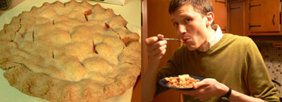

Strawberry-rhubarb homecoming
It’s nice to return home after seven months of blogging with mommy to find a beautiful strawberry-rhubarb pie on the kitchen counter, still slightly warm from the oven.

It’s even nicer to learn that mom was out picking rhubarb in a neighbor’s garden that very afternoon. She thought her pie was about ten minutes undercooked; n8 and I thought it was perfect.
Comments
That’s a pretty great welcome home.
That looks good. Could you post the recipe (especially the crust recipe).
thanks.
Nothing like a rhubarb piiiiiee!!!!
It is the best!!!
I like the strawberry addition, why not, but rhubarb gets my vote any time!
So under estimated!
From a French gourmet, in Santa Cruz, CA, thanks for the great blog!
Thx Mom for the pie!
Oops I guess I can do that…
Voila!
And I’m all out of Rhubarb.sigh.
Nice looking pie you’ve got there. So where is this neighbor with the rhubarb? Maybe I should come stealthily in the night and make off with some.
Julie—That’s what mothers are for, isn’t it? Like you making those crepes.
Yulinka—I will get around to posting my pie crust recipe one of these days. I have been a little reluctant because it is unorthodox and involves an egg, not the traditional pie pastry endorsed by experienced pie bakers, but it works for me every time.
Storytime—Thanks for the comments, and thanks for visiting our blog!
Lindy—Ha-ha, like Rapunzel’s father, stealing the rampion from the witch’s garden in the dead of night to satisfy his pregnant wife’s cravings! I did see lots of rhubarb at the East Liberty farmers’ market today and almost bought some myself because I don’t like to be dependent on my neighbor.
Add a comment